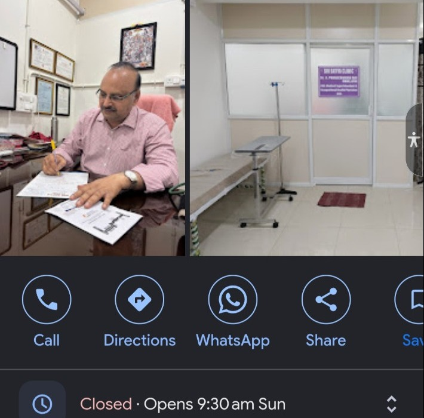

MEDICAL CLINIC • BACHUPALLY
Care that puts
people first.
Sri Satya Clinic is a medical clinic serving patients in Simhapuri Colony, Bachupally, Hyderabad.
5.0 ★Google rating
444Google reviews
040 4996 5382Clinic phone
WELCOME
A local clinic, easy to reach.
Sri Satya Clinic is listed as a medical clinic in Simhapuri Colony, Bachupally, Hyderabad. Use the call or directions buttons to contact the clinic or find the location.
AddressSimhapuri Colony, Bachupally, Hyderabad, Telangana 500090
Phone040 4996 5382
THE CLINIC
A look inside
Photos shown here are from the clinic listing supplied for this website.

CONTACT
Need to reach the clinic?
Call the clinic or open directions in Google Maps.